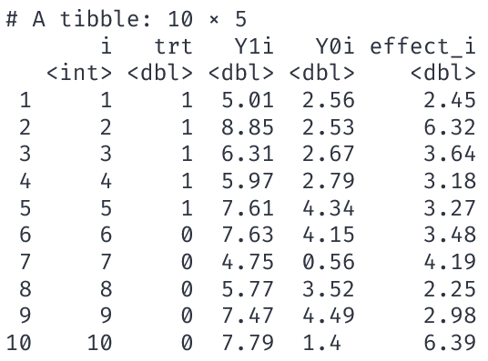
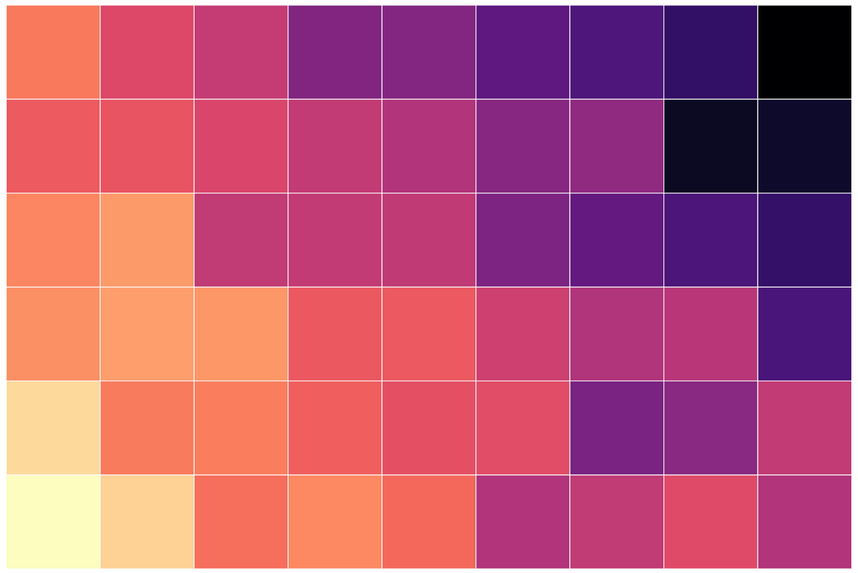
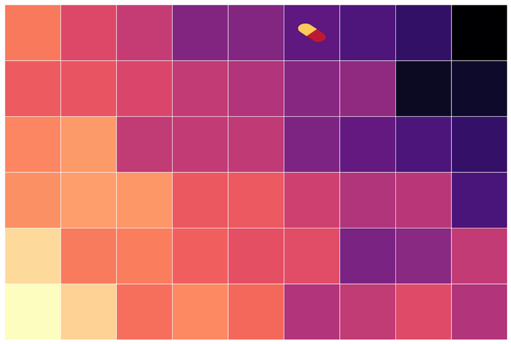
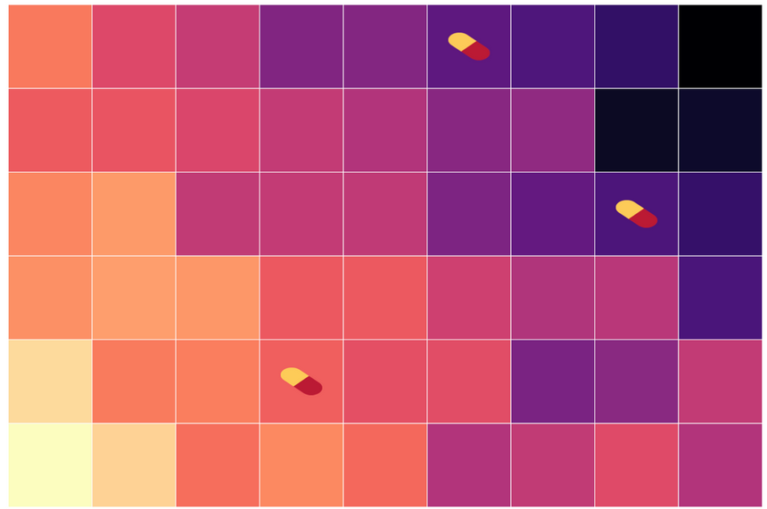
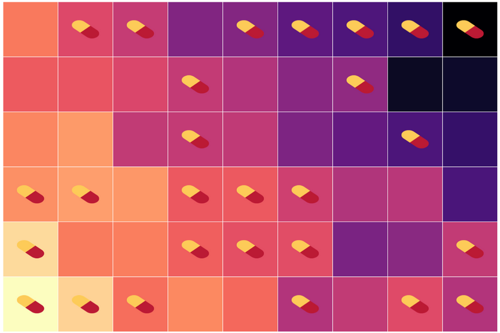

Fundamental Problem of Causal Inference
EC 320 - Introduction to Econometrics
2025
Prologue
Statistics Inform Policy
Policy: In 2017, the University of Oregon started requiring first-year students to live on campus.
Rationale: First-year students who live on campus fare better:
- 80 percent more likely to graduate in four years.
- Second-year retention rate 5 percentage points higher.
- GPAs 0.13 points higher, on average.
Do these comparisons suggest the policy improves student outcomes?
Do they describe the effect of living on campus?
Do they describe something else?
Other Things Equal
The UO’s interpretation of those comparisons warrants skepticism.
- The decision to live on campus is probably related to family wealth and interest in school.
- Family wealth and interest in school are related to academic achievement.
- Why might I be worried?
-
The difference in outcomes between those on and off campus is not an all else equal comparison.
Upshot: Can’t attribute the difference in outcomes solely to living on campus.
Living on campus (D) increases student welfare (Y)
Living on campus (D) increases student welfare (Y)
But parental income (W) impacts both student welfare (Y) and living on campus (D). Failing to account for parental income will bias comparisons
All else equal
Ceteris paribus, all else held constant, etc.
A high bar
When all else equal, statistical comparisons detect causal relationships.
(Micro)economics has developed a comparative advantage in understanding where all else equal comparisons can and cannot be made.
- Anyone can retort “correlation doesn’t necessarily imply causation.”
- Understanding why is difficult, but useful for learning from data.
Fundamental Problem of Causal Inference
Causal identification
- Goal:
-
Identify the effect of a treatment, \(D_i\), on individual \(i\)’s outcome, \(Y_{D,i}\).
Ideally, we could calculate the treatment effect for each individual \(i\) as
\[Y_{1,i} - Y_{0,i}\]
- \(Y_{1,i}\): the outcome for person \(i\) when she receives the treatment.
- \(Y_{0,i}\): the outcome for person \(i\) when she doesn’t receive the treatment.
Referred to as potential outcomes
Ideal data
The ideal data for 10 people

Causal effect of treatment.
\[ \begin{align} \tau_i = Y_{1,i} - Y_{0,i} \end{align} \] for each individual \(i\).
Ideal data
The ideal data for 10 people

Causal effect of treatment.
\[ \begin{align} \tau_i = Y_{1,i} - Y_{0,i} \end{align} \] for each individual \(i\).
Define the mean of \(\tau_i\) as the average treatment effect (ATE)
\[ \color{#81A1C1}{\overline{\tau} = 3.82} \]
Notice the assignment of treatment is irrelevant in this setting.
Ideal comparison
\[ \begin{align} \tau_i = \color{#81A1C1}{Y_{1,i}} &- \color{#B48EAD}{Y_{0,i}} \end{align} \]
Highlights the fundamental problem of econometrics, much like when a traveler assesses options down two separate roads.
The problem
- If we observe \(\color{#81A1C1}{Y_{1,i}}\), then we cannot observe \(\color{#B48EAD}{Y_{0,i}}\).
- If we observe \(\color{#B48EAD}{Y_{0,i}}\), then we cannot observe \(\color{#81A1C1}{Y_{1,i}}\).
- We do not observe the counterfactual.
Counterfactual
Hypothetical scenario representing the unobserved outcome for an individual or unit if they had experienced the alternative treatment or condition
The traveler’s alternative outcome is forever unknown to them.
Fundamental problem of causal inference
A dataset that we can observe for 10 people looks something like

We can’t observe \(\color{#81A1C1}{Y_{1,i}}\) and \(\color{#B48EAD}{Y_{0,i}}\).
But, we do observe
- \(\color{#81A1C1}{Y_{1,i}}\) for \(i\) in 1, 2, 3, 4, 5
- \(\color{#B48EAD}{Y_{0,i}}\) for \(i\) in 6, 7, 8, 9, 10
Q: How do we “fill in” the NAs and estimate \(\overline{\tau}\)? Or.
Q: What is a good counterfactual for the missing data?
Estimating causal effects
Notation: \(D_i\) is a binary indicator variable such that
- \(\color{#81A1C1}{D_i=1}\) if individual \(\color{#81A1C1}{i}\) is treated.
- \(\color{#B48EAD}{D_i=0}\) if individual \(\color{#B48EAD}{i}\) is not treated (control group).
Then, rephrasing the previous slide,
- We only observe \(\color{#81A1C1}{Y_{1,i}}\) when \(\color{#81A1C1}{D_{i}=1}\).
- We only observe \(\color{#B48EAD}{Y_{0,i}}\) when \(\color{#B48EAD}{D_{i}=0}\).
Q: How can we estimate \(\overline{\tau}\) using only \(\left(\color{#81A1C1}{Y_{1,i}|D_i=1}\right)\) and \(\left(\color{#B48EAD}{Y_{0,i}|D_i=0}\right)\)?
Estimating causal effects
Q: How can we estimate \(\overline{\tau}\) using only \(\left(\color{#81A1C1}{Y_{1,i}|D_i=1}\right)\) and \(\left(\color{#B48EAD}{Y_{0,i}|D_i=0}\right)\)?
Idea: What if we compare the group of \(n\) peoples’ means? I.e.,
\[ \begin{aligned} =&\color{#81A1C1}{E\left( Y_i\mid D_i = 1 \right)} - \color{#B48EAD}{E\left( Y_i\mid D_i =0 \right)}\\ =&\color{#81A1C1}{E\left( Y_{1i}\mid D_i = 1 \right)} - \color{#B48EAD}{E\left( Y_{0i}\mid D_i =0 \right)} \end{aligned} \]
Q: When does a simple difference-in-means provide information on the causal effect of the treatment?
Q: Is \(\color{#81A1C1}{E\left( Y_i\mid D_i = 1 \right)} - \color{#B48EAD}{E\left( Y_i\mid D_i =0 \right)}\) a good estimator for \(\overline{\tau}\)?
Estimating causal effects
Assumption: Let \(\tau_i = \tau\) for all \(i\).
- The treatment effect is equal (constant) across all individuals \(i\).
Note: We defined
\[ \tau_i = \tau = \color{#81A1C1}{Y_{1,i}} - \color{#B48EAD}{Y_{0,i}} \]
which implies
\[ \color{#81A1C1}{Y_{1,i}} = \color{#B48EAD}{Y_{0,i}} + \tau \]
Q: Is \(\color{#81A1C1}{E\left( Y_i\mid D_i = 1 \right)} \color{#434C5E}{-} \color{#B48EAD}{E\left( Y_i\mid D_i =0 \right)}\) a good estimator for \(\tau\)?
\(\quad \color{#ffffff}{\Bigg|}=\color{#81A1C1}{E\left( Y_i\mid D_i = 1 \right)} \color{#434C5E}{-} \color{#B48EAD}{E\left( Y_i\mid D_i =0 \right)}\)
\(\quad \color{#ffffff}{\Bigg|}=\color{#81A1C1}{E\left( Y_{1,i}\mid D_i = 1 \right)} \color{#434C5E}{-} \color{#B48EAD}{E\left( Y_{0,i}\mid D_i =0 \right)}\)
\(\quad \color{#ffffff}{\Bigg|}=\color{#B48EAD}{E\left( \color{#434C5E}{\tau \: +} \: \color{#B48EAD}{Y_{0,i}} \mid D_i = 1 \right)} \color{#434C5E}{-} \color{#B48EAD}{E\left( Y_{0,i}\mid D_i =0 \right)}\)
\(\quad \color{#ffffff}{\Bigg|}= \color{#434C5E}{\tau} \color{#434C5E}{+} \color{#B48EAD}{E\left(\color{#B48EAD}{Y_{0,i}} \mid D_i = 1 \right)} \color{#434C5E}{-} \color{#B48EAD}{E\left( Y_{0,i}\mid D_i =0 \right)}\)
\(\quad \color{#ffffff}{\Bigg|}= \color{#434C5E}{\text{Average causal effect}} + \color{#B48EAD}{\text{Selection bias}}\)
Estimating causal effects
Our proposed difference-in-means estimator
\[ \color{#434C5E}{\text{Average causal effect}} + \color{#B48EAD}{\text{Selection bias}} \]
gives us the sum of
- \(\tau\), the causal, average treatment effect that we want.
- Selection bias: How much treatment and control groups differ, on average.
Mastering Metrics Video on Selection Bias
Randomized Controlled Trials
Selection Bias
Problem: Selection bias precludes all else equal comparisons.
- To make causal statements, we need to shut down the bias term.
Potential solution: Conduct an experiment.
How? Random assignment of treatment
Hence the name, randomized control trial (RCT).
Groups will need to be large enough
- Following the LLN, as we increase \(n\) of both groups, our randomly assigned treatment estimate is more likely to be representative of the population mean.
Randomized control trials
Ex. Effect of de-worming on attendance
Motivation: Intestinal worms are common among children in less-developed countries. The parasitic symptoms disrupt human capital acquisition by keeping children home.
Policy Question: Do school-based de-worming interventions provide a cost-effective way to increase school attendance?
Randomized control trials
Ex. Effect of de-worming on attendance
Research Question: How much do de-worming interventions increase school attendance?
Q: Could we simply compare average attendance among children with and without access to de-worming medication?
A: If we’re after the causal effect, probably not.
Randomized control trials
Ex. Effect of de-worming on attendance
Research Question: How much do de-worming interventions increase school attendance?
Q: Why not?
A: Selection bias – Families with access to de-worming medication probably have healthier children for other reasons (e.g. wealth, access to clean drinking water).1
Randomized Control Trials
Ex. Effect of de-worming on attendance
Imagine an RCT where we have two groups of villages:
- Treatment: Where children get de-worming medication in school.
- Control: Where children don’t get de-worming medication in school (status quo).
By randomizing, we will, on average, include all kinds of villages in both groups
- poor vs. less poor
- access to clean water vs. contaminated water
- hospital vs. no hospital
54 villages

54 villages of varying levels of development
54 villages of varying levels of development plus randomly assigned treatment
54 villages of varying levels of development plus randomly assigned treatment
54 villages of varying levels of development plus randomly assigned treatment

54 villages of varying levels of development plus randomly assigned treatment
54 villages of varying levels of development plus randomly assigned treatment

Randomized Control Trials
Ex. Effect of de-worming on attendance
We can estimate the causal effect of de-worming on school attendance by comparing the average attendance rates in the treatment group (üíä) with those in the control group (no üíä).
\[ \begin{align} \overline{\text{Attendance}}_\text{Treatment} - \overline{\text{Attendance}}_\text{Control} \end{align} \]
Alternatively, we can use the regression
\[ \begin{align} \text{Attendance}_i = \beta_0 + \beta_1 \text{Treatment}_i + u_i \tag{1} \end{align} \]
where \(\text{Treatment}_i\) is a binary variable (=1 if village \(i\) received the de-worming treatment).
Randomized Control Trials
Ex. Effect of de-worming on attendance
\[ \begin{align} \text{Attendance}_i = \beta_0 + \beta_1 \text{Treatment}_i + u_i \tag{1} \end{align} \]
where \(\text{Treatment}_i\) is a binary variable (=1 if village \(i\) received the de-worming treatment).
Q: Should trust the results of Eq. \((1)\)? Why?
A: On average, randomly assigning treatment should balance treatment and control across the other dimensions that affect school attendance.
But we must always be cautious
Randomization can go wrong!

EC320, Lecture 08 | Fundamental Problem of Causal Inference